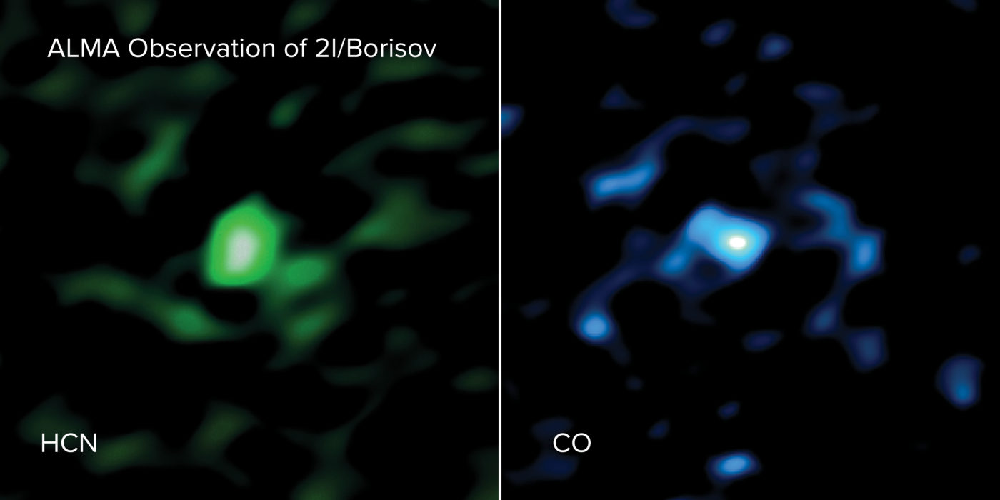

Güneş sistemimizi ziyaret eden ilk iki yıldızlararası cisimlerin geldikleri yerler hakkında bulgular bulundu.
Primordial karbon monoksitin buharlaştırılması, Comet 2I / Borisov'u milyonlarca yıl sonra kozmik derin dondurmada aktif hale getirdi.

2I / Borisov Yıldızlararası cisminin Güneş sistemimizi ziyaretinin bir sanatçı gözünden yansıması.
NRAO / AUI / NSF / S. Dagnello
Yeni ultraviyole ve milimetre dalga gözlemleri, yıldızlararası Comet 2I Borisov'un iç güneş sisteminde canlanmasını sağlayan çok sayıda primordial karbon monoksitin buharlaşmasının olduğunu gösterdi. Karbon monoksit yaklaşık 25 kelvinde donar, bu da kuyruklu yıldız Borisov'un ana yıldızının gezegen diskinin soğuk dış saçaklarında oluştuğunu gösterir. Ayrı bir şekilde, yeni bir teorik model, doğal süreçlerin bilinen ilk yıldızlararası ziyaretçi olan Oumuamua'yı nasıl oluşturabildiğini göstermektedir.
Her iki nesne de güneş sistemimize hiperbolik yörüngelerle ulaştı, ancak kökenleri - yıldızlararası olmanın yanı sıra - belirsiz kaldı. Borisov kuyruklu yıldızı hala gözlemlenebilir, ancak 'Oumuamua, Satürn'ün yörüngesini kullanarak güneş sisteminden çıktığı için artık gözlemlenebilir değil.
2I / BORISOV Kuyrukluyıldızı Şeklini Nerede Aldı?
Bu haftaki Nature Astronomy, geçen Aralık ayındaki günberisinin hemen ardından Borisov Kuyruklu Yıldızı'nın iki çalışmasını, spektroskopinin bileşimini ortaya çıkaracak kadar parlak olduğu rapor ediyor.
Hubble Uzay Teleskobu ile sorunlar, Dennis Bodewits (Auburn Üniversitesi) liderliğindeki bir ekibi ultraviyole floresan gözlemlerini karbon monoksitten (CO) bir ay boyunca yaymaya zorladı. CO'dan kaynaklanan emisyonlar bu dönemde neredeyse sabit kaldı, ancak su moleküllerinden kaynaklanan emisyonlar hızla düştü ve başlangıçta gözlemcileri şaşırttı. Daha sonra, gaz kaçağının gözlemleri sırasında 1-6 metre yüzey materyalini çıkardığını ve CO açısından zengin daha derin katmanları açığa çıkardığını fark ettiler. Aynı zamanda NASA'nın Neil Gehrels Swift Gözlemevi uydusu tarafından ölçülen su seviyelerinden %50 daha fazla olduğunu gördüler.
ALMA ile yıldızlararası Comet 2I / Borisov'dan çıkan hidrojen siyanür gazının (HCN, sol) ve karbon monoksit gazının (CO, sağ) gözlendi. ALMA görüntüleri kuyruklu yıldızın alışılmadık derecede büyük miktarda CO gazı içerdiğini göstermektedir.
ALMA (ESO / NAOJ / NRAO) / M. Cordiner ve S. Milam / AUI / NSF / S. Dagnello
Martin Cordiner (NASA Goddard Uzay Uçuş Merkezi) ve Şili'deki Atacama Büyük Milimetre / milimetre Dizisi (ALMA) ile çalışan meslektaşları tarafından Aralık ayı ortasında yapılan kuyruklu yıldızın bağımsız milimetre dalgası gözlemleri de bol miktarda CO gösterdi. suya kıyasla CO miktarı, su buzunun buharlaşmaya başladığı su kar hattı olarak adlandırılan 2.5 astronomik birimdeki (au, Dünya ve Güneş arasındaki ortalama mesafe) herhangi bir güneş sistemi kuyruklu yıldızında gözlemlenenden daha yüksekti. (Gökbilimciler C / 2016 R2'de (PanSTARRS) 2.8 au'da iken daha yüksek miktarda CO ölçtüler. Ancak Cordiner bu Oort Cloud kuyruklu yıldızını "yakalanan yıldızlararası kuyruklu yıldız olabileceği kadar yabancı" olarak nitelendirdi.
Cordiner, yıldızlararası bir kuyruklu yıldızın pozisyonunu ölçebilmeyi "tamamen yeni bir gezegensel bilim alanı açan - uzak gezegen sistemlerinin fırlatılan yıldızlararası kuyruklu yıldızlarının doğrudan gözlemleriyle incelenmesi" olarak niteliyor.
Borisov Kuyruklu Yıldızı'ndaki yüksek CO seviyeleri, muhtemelen bir gezegensel diskin dış kısmında CO kar hattının ötesinde oluştuğunu ve yıldızlararası uzayda seyahatleri sırasında 25K'dan fazla olmayan sıcaklıklarda kaldığını gösterir.
Gezegensel bir sistemden fırlatma kolaydır. "Kuyruklu yıldızlardan kurtulmanın milyonlarca yolu var," diyor Bodewits. Kuyruklu yıldızın kırmızı bir M tipi yıldız etrafında oluşabileceğini düşünüyor, burada CO kar hattı 100 au'dan fazla ile karşılaştırıldığında sadece 6.6 a.u. güneş sistemimizde.
Nature Astronomy çalışmalarında yer almayan Bryce Bolin (Caltech), karbon monoksitin buharlaşmasının Kuyruklu Yıldız'ın faaliyetinin ve parçalanmasının nedeni olarak tanımlanması kuyruklu yıldız süreçleri ve yıldızlararası nesneler hakkındaki bilgilerimize önemli bir katkı sağlıyor.
1I / 'OUMUAMUA'NIN YAPITAŞLARI
Borisov kuyruklu yıldızı bir kuyruklu yıldız olarak tanınmak kolaydı, ancak ilk yıldızlararası ziyaretçimiz 1I / 'Oumuamua, gökbilimcilerin daha önce hiç görmediği gibiydi. Uzun sürdü, düzensizce yuvarlandı, gözenekli, garip bir şekilde hareket etti, sadece gaz tutamlarını serbest bıraktı - hatta sahipsiz uzaylı uzay gemisi olabileceği düşüncelerini uyandırdı.

Gelgit bozulması senaryosunun simülasyonu, burada gösterildiği üzere Oumuamua benzeri bir nesne üretiyor. Gelgit gerilmeleri (mavi ve kırmızı renkte) yıldızlararası nesnenin bir sanatçının gözünden yansımasıdır.
NAOC / Y. Zhang; Sanatçının konsepti: ESO / M. Kornmesser
Artık Yun Zhang (Côte d’Azur Gözlemevi, Fransa) “ilk kez 'Oumuamua'nın iyi anlaşılmış fiziksel ilkelere dayanan doğal bir senaryo ile üretilebileceğini” gösteren bir modeli olduğunu düşünüyor. Süreç, "Samanyolu'nda çok yaygın olabilir" diyor.
Yun Zhang ve Douglas Lin (California Üniversitesi, Santa Cruz) 13 Nisan'da Nature Astronomy'deki sayısal modellerini anlatıyorlar. Açıklama, büyük bir nesne, yerçekimi ile bir arada tutulan bir kilometre ölçeği moloz yığını kuyruklu yıldızının veya asteroitinin yörüngesini saptırdığında gezegen oluşumu sırasında başlar. Moloz yığını orta yıldızın birkaç yüz bin kilometre içinde geçer. Yakın pasajdan gelen güçlü yerçekimi etkileri, Jüpiter'in 1990'lardaki bir karşılaşmasında Comet Shoemaker-Levy 9'u ayırdığı gibi moloz yığını bozulana kadar uzatır.
Zhang ve Lin'in modelinde, parçalanmış parçalar yıldızın ötesine geçerek uzun kümeler oluşturur. Yıldızın ısısı en uçucu buzları buharlaştırır, ancak su gibi daha yüksek erime noktalarına sahip olanlar donar ve kalan parçaları gözenekli yapılarda bir arada tutan bir kabuk oluşturur. Momentum gevşek yapıları dışarıya taşıyacaktı, burada bir kısmı galaksiyi dolaşmak için kaçacaktı. Yapılar, 'Oumuamua güneş sisteminden geçerken yaptığı gibi uzayda tuhaf bir şekilde yuvarlanabilirdi.

Bu şekilde, 'Oumuamua benzeri nesnelerin ortaya çıkmasına neden olabilecek gelgit bozulması süreci gösterilmektedir.
NAOC / Y. Zhang
Zhang "Bu senaryo geçerliyse, ‘Oumuamua'nın kökleri kilometrelerce yüzlerce kilometre arasında değişen bir kuyruklu yıldız ya da cüce gezegenin parçalanması olarak açıklanabilirdi." diyor.